What is the value of mass_index after running these commands?
mass <- 47.5
age <- 100
mass_index <- mass/age
mass <- mass * 2.0What type of vector do you get in each of the following cases (hint: use class())?
num_char <- c(1, 2, 3, "a")
num_logical <- c(1, 2, 3, TRUE)
char_logical <- c("a", "b", "c", TRUE)
tricky <- c(1, 2, 3, "4")Using this vector:
heights <- c(63, 69, 60, 65, NA, 68, 61, 70, 61, 59, 64, 69, 63, 63, NA, 72, 65, 64, 70, 63, 65)heights_no_na <- heights[!is.na(heights)]median(heights, na.rm = TRUE)
# or
median(heights_no_na)sum(heights_no_na > 67)data.frame manipulationsurveys have? (hint: functions ncol() and nrow())nrow(surveys)
ncol(surveys)glimpse())glimpse(surveys)sum() on a logical vector)
sum(is.na(surveys$weight))
# Extra: divide by total number of observations
sum(is.na(surveys$weight))/nrow(surveys)unique() and length())length(unique(surveys$genus))dplyrUsing pipes, subset the surveys data to include animals collected before 1995 and retain only the columns year, sex, and weight.
surveys_pre1995 <- surveys %>%
filter(year < 1995) %>%
select(year, sex, weight)The answer should have 21486 rows of data.
Create a new data frame from the surveys data that meets the following criteria: contains only the species_id column and a new column called hindfoot_half containing values that are half the hindfoot_length values. In this hindfoot_half column, there are no NAs and all values are less than 30.
Hint: think about how the commands should be ordered to produce this data frame!
surveys_hindfoot_half <- surveys %>%
filter(!is.na(hindfoot_length)) %>%
mutate(hindfoot_half = hindfoot_length / 2) %>%
filter(hindfoot_half < 30) %>%
select(species_id, hindfoot_half)The answer should have 31436 rows and 2 columns.
plot_type surveyed?surveys %>%
count(plot_type) surveys %>%
group_by(species_id) %>%
summarize(
mean_hindfoot_length = mean(hindfoot_length, na.rm = TRUE),
min_hindfoot_length = min(hindfoot_length, na.rm = TRUE),
max_hindfoot_length = max(hindfoot_length, na.rm = TRUE),
n = n(),
n_hindfoot = sum(!is.na(hindfoot_length))
)year, genus, species_id and weight.surveys %>%
filter(!is.na(weight)) %>%
group_by(year) %>%
filter(weight == max(weight)) %>%
select(year, genus, species, weight) %>%
arrange(year)surveys_complete, which:
weight, hindfoot_length and sexsurveys_complete <- surveys %>%
filter(!is.na(weight) & !is.na(sex) & !is.na(hindfoot_length))
common_species <- surveys_complete %>%
count(species_id) %>%
filter(n >= 50)
surveys_complete <- surveys_complete %>%
filter(species_id %in% common_species$species_id)The final data frame should have 30463 rows.
data_output folder of your project directory.write_csv(surveys_complete, "data_output/surveys_complete.csv")ggplot2Boxplots are useful summaries, but hide the shape of the distribution. For example, if the distribution is bimodal, we would not see it in a boxplot. An alternative to the boxplot is the violin plot, where the shape (of the density of points) is drawn.
geom_violin() to create violin plots of weight distributions for each genussurveys_complete %>%
ggplot(aes(genus, weight)) +
geom_violin()scale_y_log10().surveys_complete %>%
ggplot(aes(genus, weight)) +
geom_violin() +
scale_y_log10()?geom_boxplot help)?surveys_complete %>%
ggplot(aes(genus, weight)) +
geom_violin() +
geom_boxplot(width = 0.2, outlier.shape = NA) +
scale_y_log10()species_id, with violin plots coloured by genus.surveys_complete %>%
ggplot(aes(species_id, weight)) +
geom_violin(aes(fill = genus)) +
geom_boxplot(width = 0.2, outlier.shape = NA) +
scale_y_log10()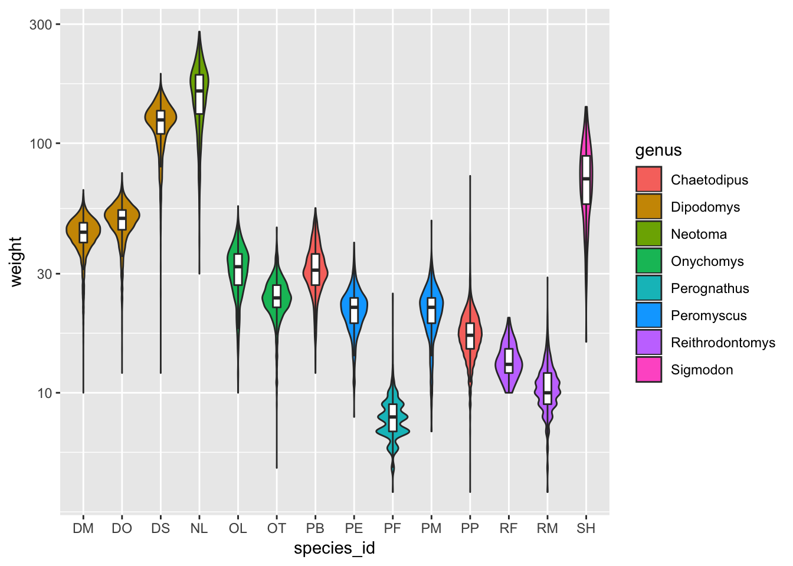
Use the count() function to get the number of individuals of each genus in each plot type surveyed and then use that table to make a visual representation like the one shown below.
(hint: try the size aesthetic with geom_point())
surveys_complete %>%
count(genus, plot_type) %>%
ggplot(aes(genus, plot_type)) +
geom_point(aes(size = n)) +
theme(axis.text.x = element_text(angle = 45, hjust = 1)) +
labs(x = "Genus", y = "Plot Type")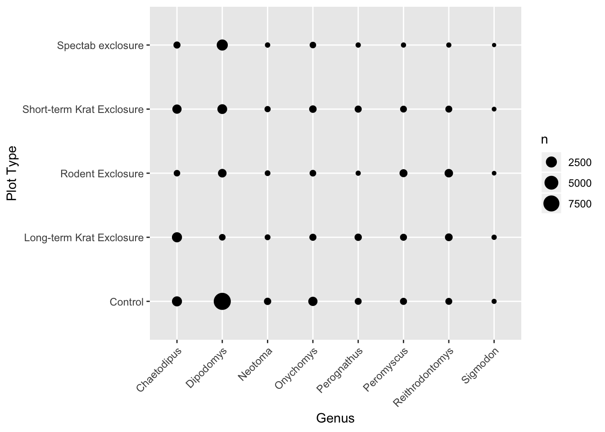
We want to explore if the species diversity (number of different species) changed across the years in different plot treatments (plot_type).
yearly_diversity, with the number of distinct species_id sampled in each year and plot type.(hint: use the function n_distinct() inside the summarise() function)
yearly_diversity <- surveys_complete %>%
group_by(year, plot_type) %>%
summarise(n_species = n_distinct(species_id)) %>%
ungroup()yearly_diversity %>%
ggplot(aes(year, n_species)) +
geom_line(aes(colour = plot_type)) +
labs(colour = "Plot Type", x = "Year", y = "# species")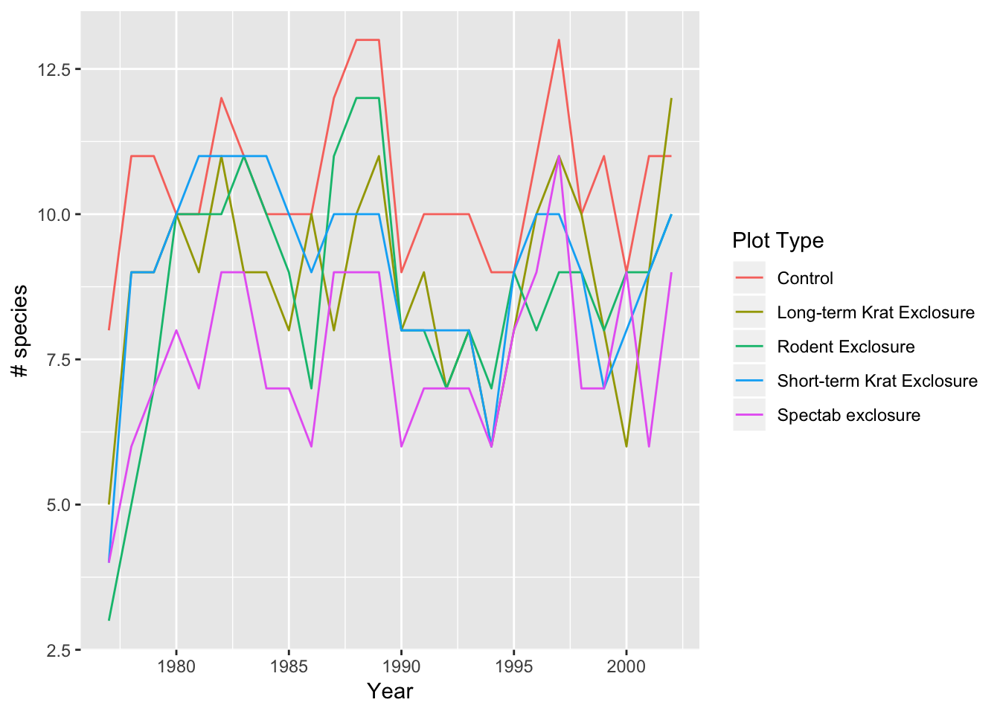
year, plot_type and sex). Can you think of ways to change your previous plot to also visualise this extra information?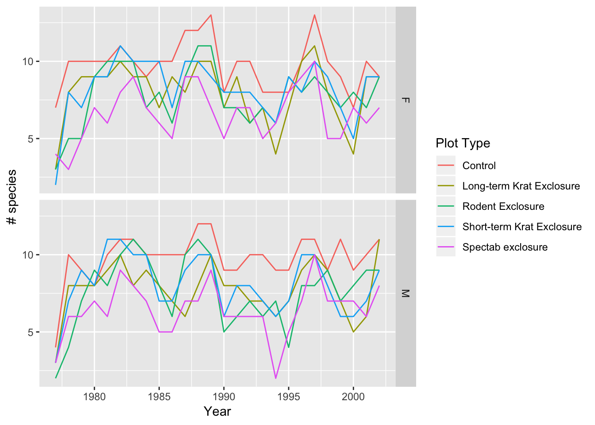
yearly_diversity table, can you recreate the plot below, ensuring the order of the plot_type facets is as shown?# Make a vector with treatments in desired order
## this is optional, but makes it easier to read the code
plot_type_order <- c("Control",
"Short-term Krat Exclosure", "Long-term Krat Exclosure",
"Rodent Exclosure", "Spectab exclosure")
# Factorise the `plot_type` variable with custom levels before plotting
yearly_diversity %>%
mutate(plot_type = factor(plot_type, levels = plot_type_order)) %>%
ggplot(aes(year, n_species)) +
geom_line(aes(colour = sex)) +
labs(colour = "Plot Type", x = "Year", y = "# species") +
facet_wrap( ~ plot_type)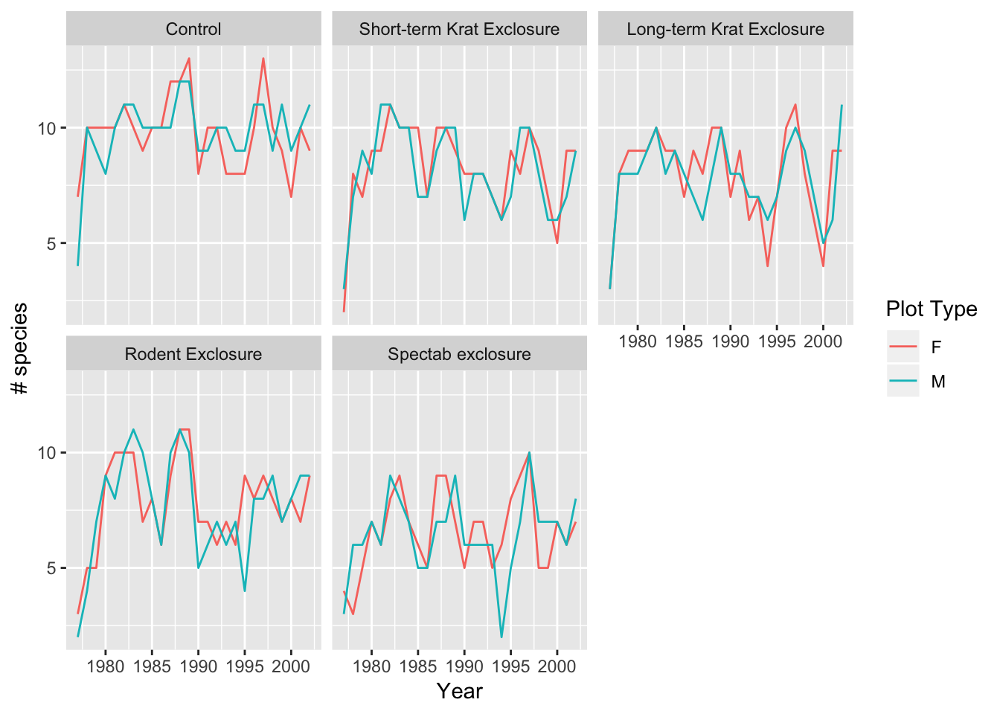
Use line plots to help you explore these questions:
surveys_complete %>%
group_by(year) %>%
summarise(mean_wgt = mean(weight, na.rm = TRUE)) %>%
ggplot(aes(year, mean_wgt)) +
geom_line() + geom_point() +
labs(x = "Year", y = "Average biomass (g)")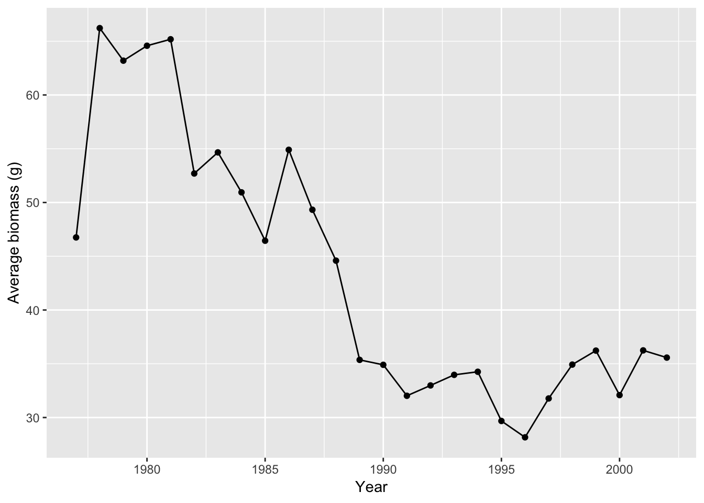
surveys_complete %>%
group_by(year, sex) %>%
summarise(mean_wgt = mean(weight, na.rm = TRUE)) %>%
ggplot(aes(year, mean_wgt, colour = sex)) +
geom_line() + geom_point() +
labs(x = "Year", y = "Average biomass (g)")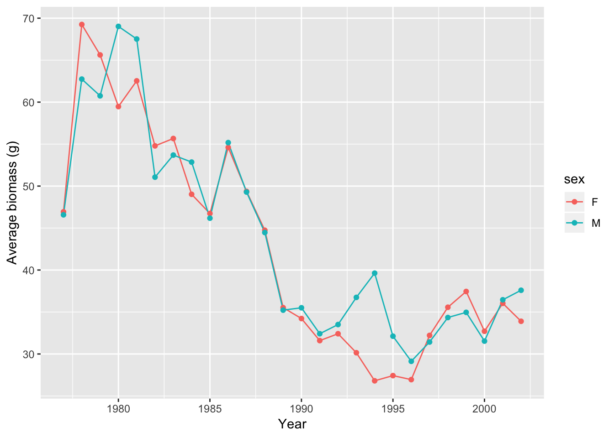
plot_type? (hint: use facetting to help you)surveys_complete %>%
group_by(year, sex, plot_type) %>%
summarise(mean_wgt = mean(weight, na.rm = TRUE)) %>%
ggplot(aes(year, mean_wgt, colour = sex)) +
geom_line() + geom_point() +
facet_wrap(~ plot_type) +
labs(x = "Year", y = "Average biomass (g)")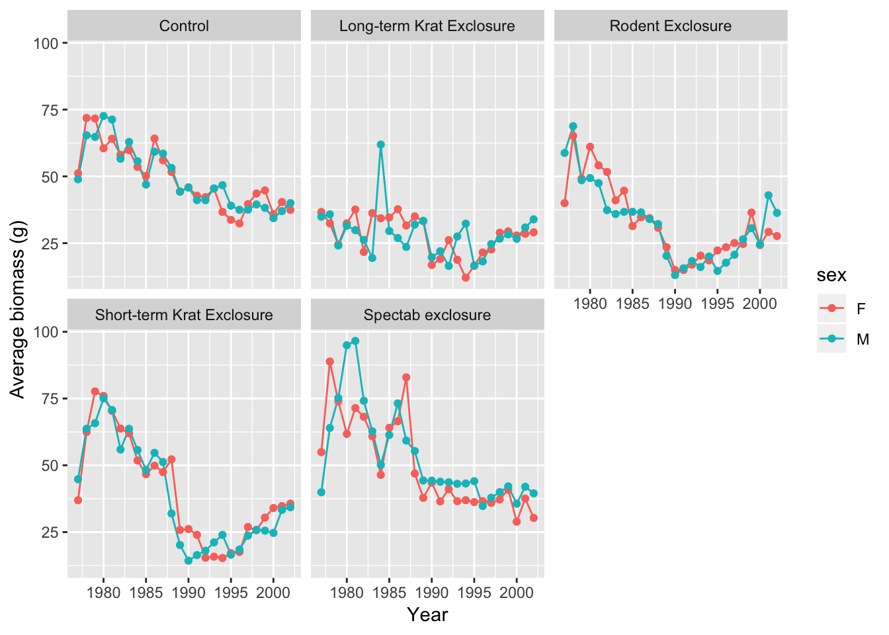
surveys_complete %>%
group_by(year, sex, plot_type) %>%
summarise(mean_wgt = mean(weight),
se_wgt = sd(weight)/sqrt(n())) %>%
ggplot(aes(year, mean_wgt, colour = sex)) +
geom_ribbon(aes(ymin = mean_wgt - 2*se_wgt, ymax = mean_wgt + 2*se_wgt, fill = sex),
alpha = 0.3, colour = NA) +
geom_line() +
facet_wrap( ~ plot_type) +
labs(x = "Year", y = "Average biomass (g)")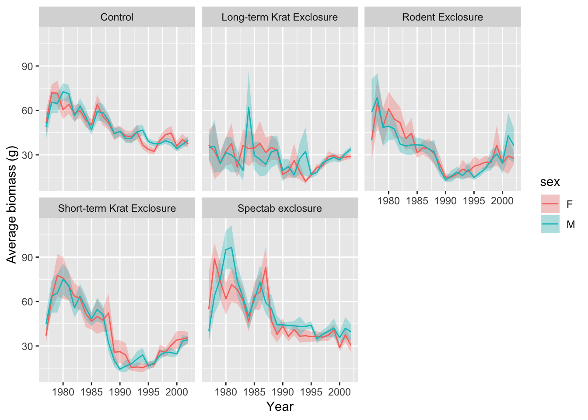
plot_type surveyed. (hint: add a x=y identity line using geom_abline())surveys_complete %>%
group_by(species_id, plot_type, sex) %>%
summarise(mean_wgt = mean(weight)) %>%
ungroup() %>%
spread(sex, mean_wgt) %>%
ggplot(aes(M, F)) +
geom_abline(linetype = 2) +
geom_point(aes(colour = factor(plot_type))) +
scale_x_log10() + scale_y_log10() +
labs(x = "Male", y = "Female", colour = "Plot type")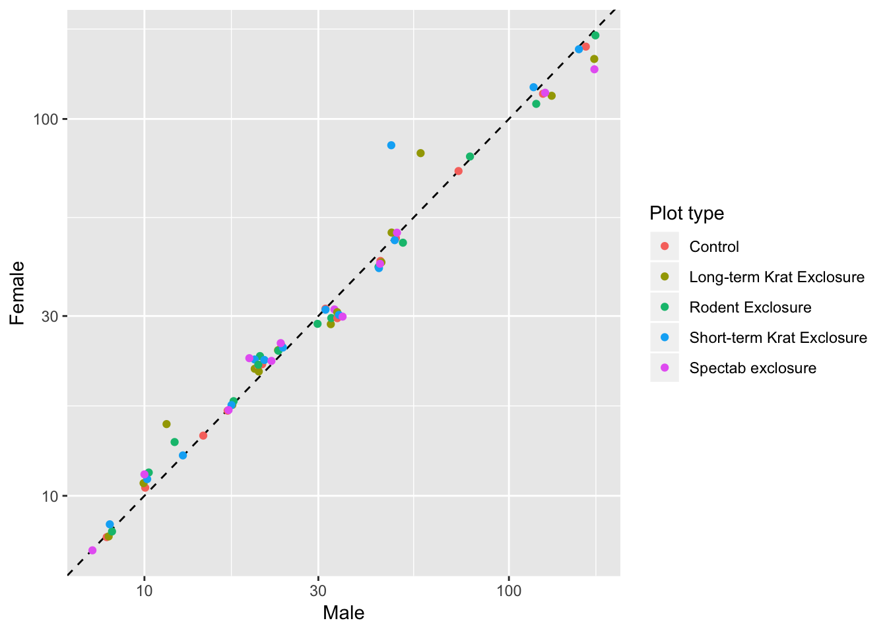
reorder() to factorise the x-axis variable)surveys_complete %>%
group_by(species_id) %>%
mutate(mean_weight = mean(weight)) %>%
ungroup() %>%
mutate(species_id = reorder(species_id, mean_weight)) %>%
ggplot(aes(species_id, hindfoot_length)) +
geom_boxplot(aes(fill = log10(mean_weight))) +
scale_fill_viridis_c() # "viridis" is a colour-blind pallete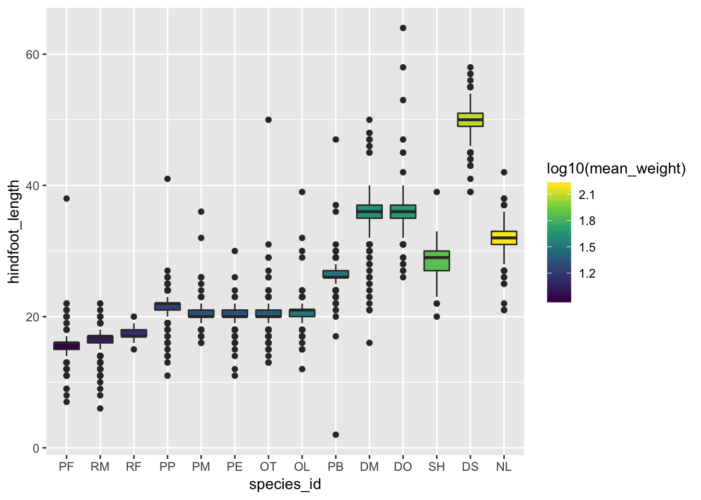
In a publication from Ernest et al. 2017 some species where classified according to their habitat preferences.
Read this information into your R session using the following command:
habitat_pref <- read_csv("https://raw.githubusercontent.com/tavareshugo/data_carpentry_extras/master/slides_with_exercises/species_habitat_affinities_Ernest2017.csv")surveys_complete dataset? (hint: the function paste() might be useful)sum(habitat_pref$species %in% paste(surveys_complete$genus, surveys_complete$species))?facet_grid to see how to make the panels scales and spacing adjust to the data)surveys_complete %>%
mutate(species_name = paste(genus, species)) %>%
inner_join(habitat_pref, by = c("species_name" = "species")) %>%
ggplot(aes(species_id, weight)) +
geom_boxplot(aes(fill = genus)) +
facet_grid(sex ~ habitat, scale = "free_x", space = "free_x") +
scale_y_log10()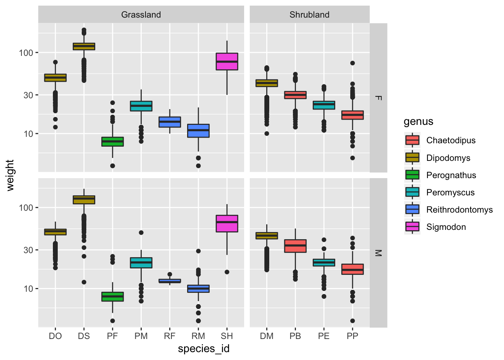
(don’t worry too much about getting the exact look of the graph below. But if you do want to get a similar look, try and do some web search! E.g. “how to change legend position in ggplot2”)
surveys_complete %>%
mutate(species_name = paste(genus, species)) %>%
left_join(habitat_pref, by = c("species_name" = "species")) %>%
group_by(year, habitat) %>%
summarise(abundance = n()/(0.25*n_distinct(plot_id))) %>%
ggplot(aes(year, abundance)) +
geom_line(aes(colour = habitat)) +
labs(x = "Year", y = "Abundance (# individuals/ha)", colour = "Habitat preference") +
scale_colour_viridis_d(na.value = "grey") +
theme_classic() +
theme(legend.position = c(0, 1), legend.justification = c(0, 1))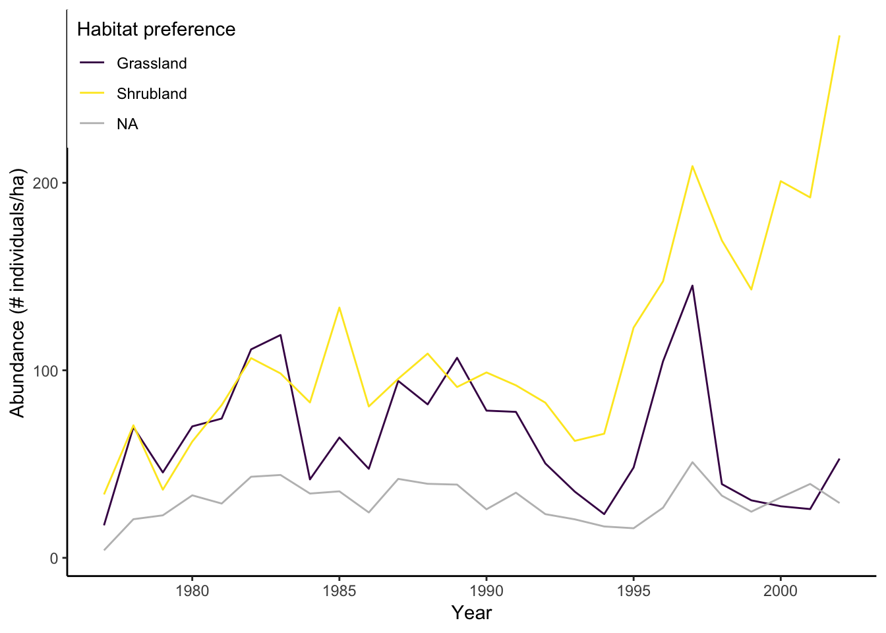
Data Carpentry,
2018. License. Contributing.
Questions? Feedback?
Please file
an issue on GitHub.
On
Twitter: @datacarpentry